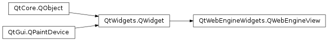

QWebEngineView¶
Synopsis¶
Functions¶
- def
findText(subString[, options=QWebEnginePage.FindFlags()]) - def
hasSelection() - def
icon() - def
iconUrl() - def
load(request) - def
load(url) - def
page() - def
pageAction(action) - def
selectedText() - def
setContent(data[, mimeType=”“[, baseUrl=QUrl()]]) - def
setHtml(html[, baseUrl=QUrl()]) - def
setPage(page) - def
setUrl(url) - def
setZoomFactor(factor) - def
settings() - def
title() - def
triggerPageAction(action[, checked=false]) - def
url() - def
zoomFactor()
Virtual functions¶
- def
createWindow(type)
Signals¶
- def
iconChanged(arg__1) - def
iconUrlChanged(arg__1) - def
loadFinished(arg__1) - def
loadProgress(progress) - def
loadStarted() - def
renderProcessTerminated(terminationStatus, exitCode) - def
selectionChanged() - def
titleChanged(title) - def
urlChanged(arg__1)
Detailed Description¶
The
PySide2.QtWebEngineWidgets.QWebEngineViewclass provides a widget that is used to view and edit web documents.A web view is the main widget component of the Qt web browsing module. It can be used in various applications to display web content live from the Internet.
A web site can be loaded to a web view with the
PySide2.QtWebEngineWidgets.QWebEngineView.load()function. The GET method is always used to load URLs.Like all Qt widgets, the
PySide2.QtWidgets.QWidget.show()function must be invoked in order to display the web view. The snippet below illustrates this:QWebEngineView *view = new QWebEngineView(parent); view->load(QUrl("http://qt-project.org/")); view->show();Alternatively,
PySide2.QtWebEngineWidgets.QWebEngineView.setUrl()can be used to load a web site. If you have the HTML content readily available, you can usePySide2.QtWebEngineWidgets.QWebEngineView.setHtml()instead.The
PySide2.QtWebEngineWidgets.QWebEngineView.loadStarted()signal is emitted when the view begins loading and thePySide2.QtWebEngineWidgets.QWebEngineView.loadProgress()signal is emitted whenever an element of the web view completes loading, such as an embedded image or a script. ThePySide2.QtWebEngineWidgets.QWebEngineView.loadFinished()signal is emitted when the view has been loaded completely. Its argument, eithertrueorfalse, indicates whether loading was successful or failed.The
PySide2.QtWebEngineWidgets.QWebEngineView.page()function returns a pointer to a web page object. APySide2.QtWebEngineWidgets.QWebEngineViewcontains aPySide2.QtWebEngineWidgets.QWebEnginePage, which in turn allows access to theQWebEngineHistoryin the page’s context.The title of an HTML document can be accessed with the
PySide2.QtWebEngineWidgets.QWebEngineView.title()property. Additionally, a web site may specify an icon, which can be accessed using thePySide2.QtWebEngineWidgets.QWebEngineView.icon()or its URL using thePySide2.QtWebEngineWidgets.QWebEngineView.iconUrl()property. If the title or the icon changes, the correspondingPySide2.QtWebEngineWidgets.QWebEngineView.titleChanged(),PySide2.QtWebEngineWidgets.QWebEngineView.iconChanged()andPySide2.QtWebEngineWidgets.QWebEngineView.iconUrlChanged()signals will be emitted. ThePySide2.QtWebEngineWidgets.QWebEngineView.zoomFactor()property enables zooming the contents of the web page by a scale factor.The widget features a context menu that is tailored to the element at hand, and includes actions useful in a browser. For a custom context menu, or for embedding actions in a menu or toolbar, the individual actions are available via
PySide2.QtWebEngineWidgets.QWebEngineView.pageAction(). The web view maintains the state of the returned actions, but allows modification of action properties such asPySide2.Qt3DInput.Qt3DInput::QAction.text()orPySide2.Qt3DInput.Qt3DInput::QAction.icon(). The action semantics can also be triggered directly throughPySide2.QtWebEngineWidgets.QWebEngineView.triggerPageAction().If you want to provide support for web sites that allow the user to open new windows, such as pop-up windows, you can subclass
PySide2.QtWebEngineWidgets.QWebEngineViewand reimplement thePySide2.QtWebEngineWidgets.QWebEngineView.createWindow()function.See also
WebEngine Widgets Simple Browser Example WebEngine Content Manipulation Example WebEngine Markdown Editor Example
-
class
PySide2.QtWebEngineWidgets.QWebEngineView([parent=Q_NULLPTR])¶ Parameters: parent – PySide2.QtWidgets.QWidgetConstructs an empty web view with the parent
parent.
-
PySide2.QtWebEngineWidgets.QWebEngineView.back()¶ Convenience slot that loads the previous document in the list of documents built by navigating links. Does nothing if there is no previous document.
It is equivalent to:
view->page()->triggerAction(QWebEnginePage::Back);
-
PySide2.QtWebEngineWidgets.QWebEngineView.createWindow(type)¶ Parameters: type – PySide2.QtWebEngineWidgets.QWebEnginePage.WebWindowTypeReturn type: PySide2.QtWebEngineWidgets.QWebEngineViewThis function is called from the
PySide2.QtWebEngineWidgets.QWebEnginePage.createWindow()method of the associatedPySide2.QtWebEngineWidgets.QWebEnginePageeach time the page wants to create a new window of the giventype. For example, when a JavaScript request to open a document in a new window is issued.Note
If the
createWindow()method of the associated page is reimplemented, this method is not called, unless explicitly done so in the reimplementation.See also
-
PySide2.QtWebEngineWidgets.QWebEngineView.findText(subString[, options=QWebEnginePage.FindFlags()])¶ Parameters: - subString – unicode
- options –
PySide2.QtWebEngineWidgets.QWebEnginePage.FindFlags
-
PySide2.QtWebEngineWidgets.QWebEngineView.forward()¶ Convenience slot that loads the next document in the list of documents built by navigating links. Does nothing if there is no next document.
It is equivalent to:
view->page()->triggerAction(QWebEnginePage::Forward);
-
PySide2.QtWebEngineWidgets.QWebEngineView.hasSelection()¶ Return type: PySide2.QtCore.bool
-
PySide2.QtWebEngineWidgets.QWebEngineView.icon()¶ Return type: PySide2.QtGui.QIcon
-
PySide2.QtWebEngineWidgets.QWebEngineView.iconChanged(arg__1)¶ Parameters: arg__1 – PySide2.QtGui.QIcon
-
PySide2.QtWebEngineWidgets.QWebEngineView.iconUrl()¶ Return type: PySide2.QtCore.QUrl
-
PySide2.QtWebEngineWidgets.QWebEngineView.iconUrlChanged(arg__1)¶ Parameters: arg__1 – PySide2.QtCore.QUrl
-
PySide2.QtWebEngineWidgets.QWebEngineView.load(url)¶ Parameters: url – PySide2.QtCore.QUrlLoads the specified
urland displays it.Note
The view remains the same until enough data has arrived to display the new URL.
-
PySide2.QtWebEngineWidgets.QWebEngineView.load(request) Parameters: request – PySide2.QtWebEngineCore.QWebEngineHttpRequestIssues the specified
requestand loads the response.
-
PySide2.QtWebEngineWidgets.QWebEngineView.loadFinished(arg__1)¶ Parameters: arg__1 – PySide2.QtCore.bool
-
PySide2.QtWebEngineWidgets.QWebEngineView.loadProgress(progress)¶ Parameters: progress – PySide2.QtCore.int
-
PySide2.QtWebEngineWidgets.QWebEngineView.loadStarted()¶
-
PySide2.QtWebEngineWidgets.QWebEngineView.page()¶ Return type: PySide2.QtWebEngineWidgets.QWebEnginePageReturns a pointer to the underlying web page.
-
PySide2.QtWebEngineWidgets.QWebEngineView.pageAction(action)¶ Parameters: action – PySide2.QtWebEngineWidgets.QWebEnginePage.WebActionReturn type: PySide2.QtWidgets.QActionReturns a pointer to a
PySide2.QtWidgets.QActionthat encapsulates the specified web actionaction.
-
PySide2.QtWebEngineWidgets.QWebEngineView.reload()¶ Reloads the current document.
-
PySide2.QtWebEngineWidgets.QWebEngineView.renderProcessTerminated(terminationStatus, exitCode)¶ Parameters: - terminationStatus –
PySide2.QtWebEngineWidgets.QWebEnginePage.RenderProcessTerminationStatus - exitCode –
PySide2.QtCore.int
- terminationStatus –
-
PySide2.QtWebEngineWidgets.QWebEngineView.selectedText()¶ Return type: unicode
-
PySide2.QtWebEngineWidgets.QWebEngineView.selectionChanged()¶
-
PySide2.QtWebEngineWidgets.QWebEngineView.setContent(data[, mimeType=""[, baseUrl=QUrl()]])¶ Parameters: - data –
PySide2.QtCore.QByteArray - mimeType – unicode
- baseUrl –
PySide2.QtCore.QUrl
Sets the content of the web view to
data. If themimeTypeargument is empty, it is assumed that the content istext/plain,charset=US-ASCII.External objects referenced in the content are located relative to
baseUrl.The data is loaded immediately; external objects are loaded asynchronously.
See also
PySide2.QtWebEngineWidgets.QWebEngineView.load()PySide2.QtWebEngineWidgets.QWebEngineView.setHtml()QWebEnginePage.toHtml()- data –
-
PySide2.QtWebEngineWidgets.QWebEngineView.setHtml(html[, baseUrl=QUrl()])¶ Parameters: - html – unicode
- baseUrl –
PySide2.QtCore.QUrl
Sets the content of the web view to the specified
htmlcontent.External objects, such as stylesheets or images referenced in the HTML document, are located relative to
baseUrl.The HTML document is loaded immediately, whereas external objects are loaded asynchronously.
When using this method, Qt assumes that external resources, such as JavaScript programs or style sheets, are encoded in UTF-8 unless otherwise specified. For example, the encoding of an external script can be specified through the
charsetattribute of the HTML script tag. Alternatively, the encoding can be specified by the web server.This is a convenience function equivalent to
setContent(html, "text/html;charset=UTF-8", baseUrl).Warning
This function works only for HTML. For other MIME types (such as XHTML or SVG),
PySide2.QtWebEngineWidgets.QWebEngineView.setContent()should be used instead.Note
Content larger than 2 MB cannot be displayed, because converts the provided HTML to percent-encoding and places
data: in front of it to create the URL that it navigates to. Thereby, the provided code becomes a URL that exceeds the 2 MB limit set by Chromium. If the content is too large, thePySide2.QtWebEngineWidgets.QWebEngineView.loadFinished()signal is triggered withsuccess=false.See also
PySide2.QtWebEngineWidgets.QWebEngineView.load()PySide2.QtWebEngineWidgets.QWebEngineView.setContent()QWebEnginePage.toHtml()QWebEnginePage.setContent()
-
PySide2.QtWebEngineWidgets.QWebEngineView.setPage(page)¶ Parameters: page – PySide2.QtWebEngineWidgets.QWebEnginePageMakes
pagethe new web page of the web view.The parent
PySide2.QtCore.QObjectof the provided page remains the owner of the object. If the current page is a child of the web view, it will be deleted.
-
PySide2.QtWebEngineWidgets.QWebEngineView.setUrl(url)¶ Parameters: url – PySide2.QtCore.QUrl
-
PySide2.QtWebEngineWidgets.QWebEngineView.setZoomFactor(factor)¶ Parameters: factor – PySide2.QtCore.qreal
-
PySide2.QtWebEngineWidgets.QWebEngineView.settings()¶ Return type: PySide2.QtWebEngineWidgets.QWebEngineSettingsReturns a pointer to the view or page specific settings object.
It is equivalent to:
view->page()->settings();
See also
-
PySide2.QtWebEngineWidgets.QWebEngineView.stop()¶ Convenience slot that stops loading the document.
It is equivalent to:
view->page()->triggerAction(QWebEnginePage::Stop);
-
PySide2.QtWebEngineWidgets.QWebEngineView.title()¶ Return type: unicode
-
PySide2.QtWebEngineWidgets.QWebEngineView.titleChanged(title)¶ Parameters: title – unicode
-
PySide2.QtWebEngineWidgets.QWebEngineView.triggerPageAction(action[, checked=false])¶ Parameters: - action –
PySide2.QtWebEngineWidgets.QWebEnginePage.WebAction - checked –
PySide2.QtCore.bool
Triggers the specified
action. If it is a checkable action, the specifiedcheckedstate is assumed.The following example triggers the copy action and therefore copies any selected text to the clipboard.
view->triggerPageAction(QWebEnginePage::Copy);
- action –
-
PySide2.QtWebEngineWidgets.QWebEngineView.url()¶ Return type: PySide2.QtCore.QUrl
-
PySide2.QtWebEngineWidgets.QWebEngineView.urlChanged(arg__1)¶ Parameters: arg__1 – PySide2.QtCore.QUrl
-
PySide2.QtWebEngineWidgets.QWebEngineView.zoomFactor()¶ Return type: PySide2.QtCore.qreal
© 2018 The Qt Company Ltd. Documentation contributions included herein are the copyrights of their respective owners. The documentation provided herein is licensed under the terms of the GNU Free Documentation License version 1.3 as published by the Free Software Foundation. Qt and respective logos are trademarks of The Qt Company Ltd. in Finland and/or other countries worldwide. All other trademarks are property of their respective owners.